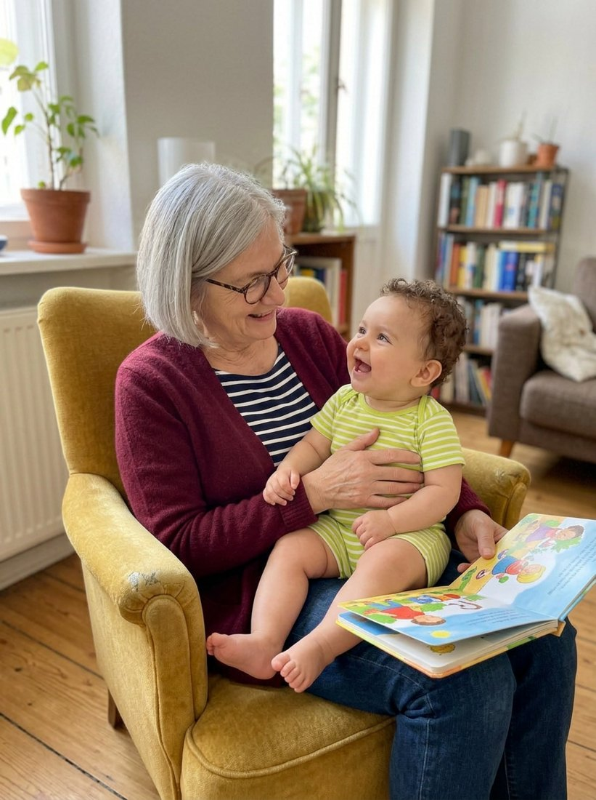
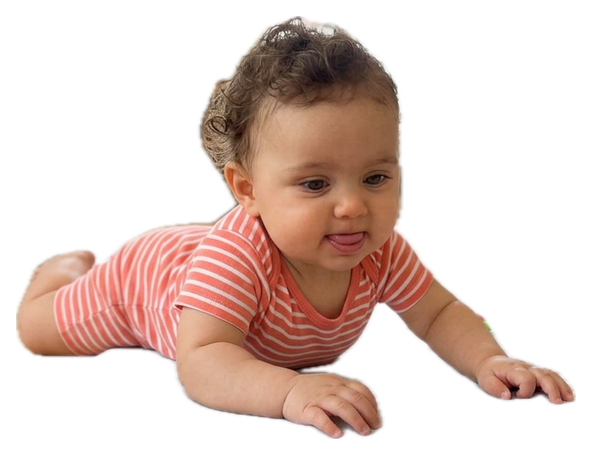
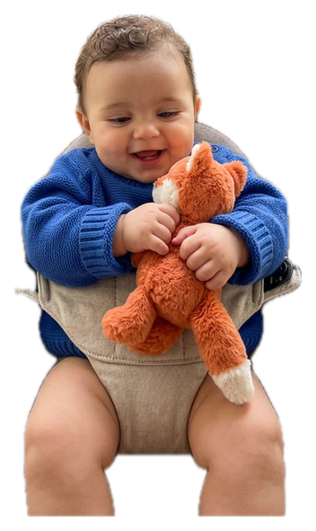
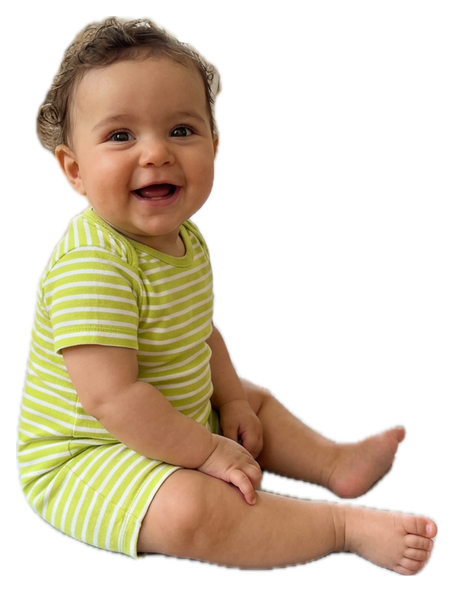
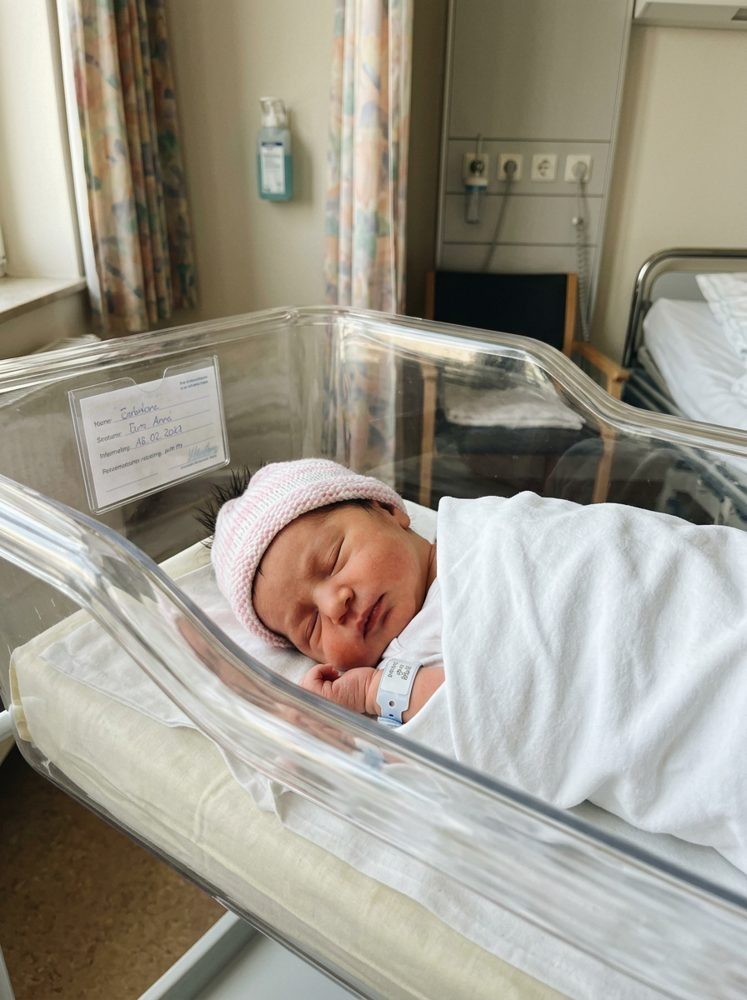
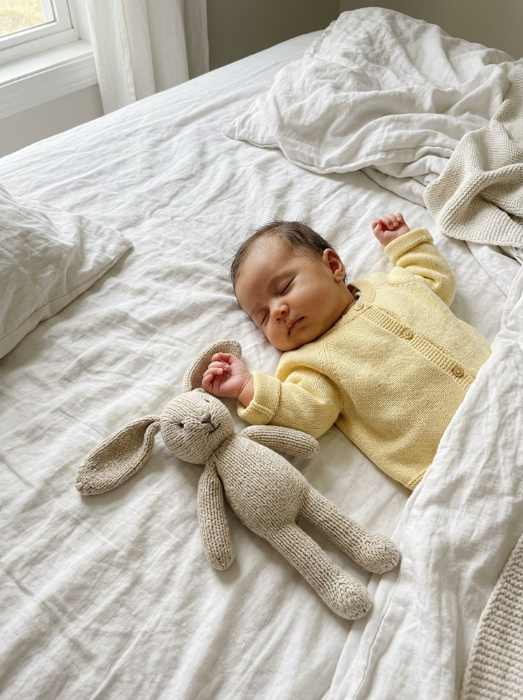
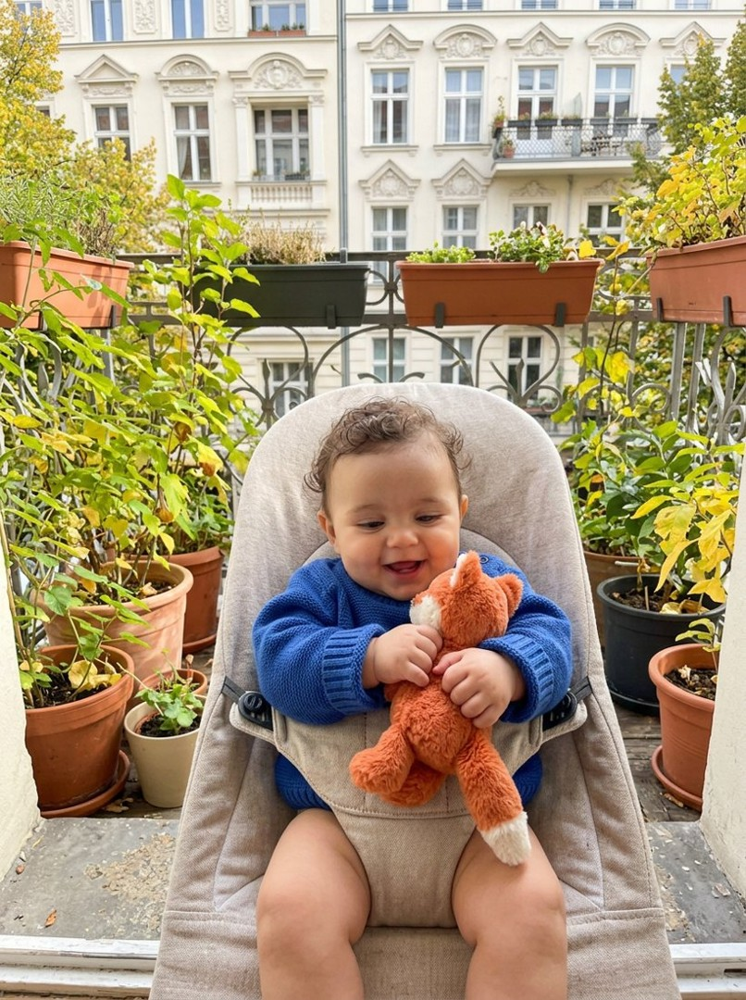

Unsere Woche
Unsere Woche


 Zum FesthaltenUnser
Zum FesthaltenUnserZoobesuch


Zum FesthaltenUnserNovember



5 MonateHanne im November
 4 Monate5 MonateHanne
4 Monate5 MonateHanne




Hanne wächstJuniJuliAugustSeptemberOktoberNovemberDiese Woche
Unsere Woche9. bis 15. NovemberUnser Zoobesuch
Sonntag, 6 Fotos


 Unser erster Zoobesuch zu viert. Theo wollte sofort zu den Giraffen, Hanne hat die Pinguine mit großen Augen verfolgt.
Unser erster Zoobesuch zu viert. Theo wollte sofort zu den Giraffen, Hanne hat die Pinguine mit großen Augen verfolgt.


Letzte Woche
Oma liest vor
Mittwoch, 1 Foto


Der erste Brei
Freitag, 3 Fotos


Oktober
Herbst im Park
26. Oktober, 4 Fotos


Auf dem Bauch
12. Oktober, 3 Fotos